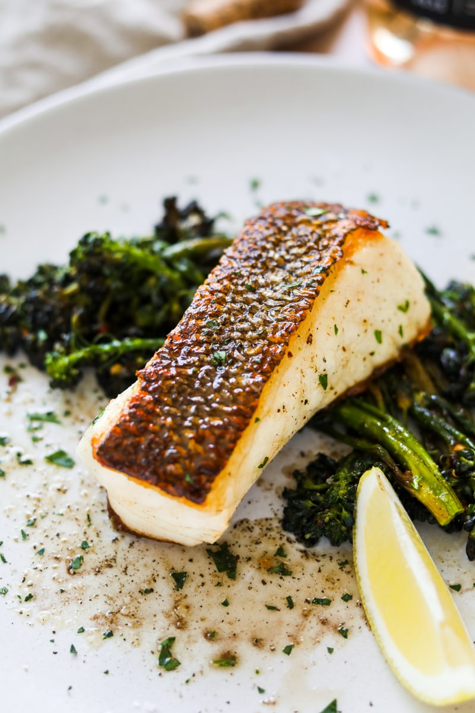

Buttery Fish

While this recipe will work for any saltwater or freshwater fish, we found that it works best for white fish such as:
- Black cod - Black cod's high fat content gives it a unique silky texture and naturally buttery flavor.
- Halibut - Halibut is a lightly sweet and mild tasting white fish. Because the flavor is so gentle, it pairs well with sauces and seasonings like pesto or lemon juice. It's also thicker and even firmer than cod.
- Tilapia - Tilapia is a white fish with an even milder taste than halibut. Like halibut, Tilapia is a low calorie source of lean protein, but is not quite as nutrient rich.
Ingredients!
- Fish fillets - Black cod or Halibut work best for this recipe because pan searing the fish will make the skin crispy, but the inside buttery.
- Sea salt or kosher salt - Salt accentuates the flavors of the fish.
- Freshly ground black pepper - Black pepper adds spice.
- Neutral cooking oil - We recommend a neutral cooking oiul like avocado oil, grapeseed oil, vegetable oil, or sunflower oil for this recipe. ALl of these oils have a high smoke point, so they won't burn or smoke while cooking the fish. You also want the oil to be somewhat flavorless so you can season the fish and easily control the taste.
- parsley - Parsley adds a fresh herb flavor to the fish.
- Lemon wedges - Lemon juice brightens the dish.
- Butter - Butter adds fat and flavor to the dish.
Steps!
- Prepare fish - Gently pat both sides of the fresh fish fillets dry with a paper towel. Then, season each side with sea salt or kosher salt and black pepper. Use your fingers to gently pat the seasoning into the fish.
- Cook fish fillets - Heat oil in a large skillet or braiser over medium-high heat. Once the pan gets hot, place the fish skin side down. Gently press down on the fish with a spatula or your knuckles for 10-20 seconds to prevent curling. Cook untouched for about 3-4 minutes.
- Turn over fish - Once the side of the fish shows it is cooked about about two thirds of the way, use a fish spatula to carefully turn the fish over. Lower the heat to medium and cook the other side for an additional 3-4 minutes. The fish will be caramelized around the edges. Add about a tablespoon of butter to the pan and baste the fillets as the butter melts.
- Serve and garnish - Serve the fish fillets immediately and garnish with chopped parsley and lemon slices.
Pro tip: Be sure the oil is really hot before you add the fish. The oil should sizzle when you add the fish.